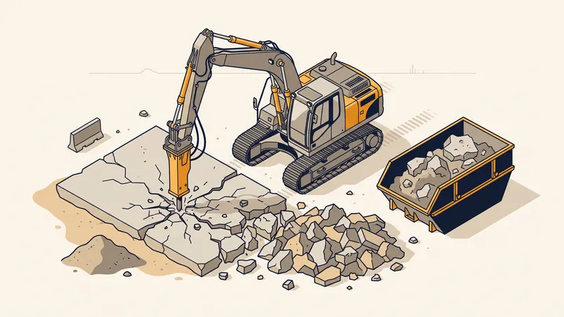

Prix Démolition Dalle Béton au m² en 2026 : Tarifs & Méthodes
Vous devez démolir une dalle béton pour reconstruire, rénover ou réaménager votre terrain ? La démolition d'une dalle en béton est une intervention courante mais technique, dont le coût varie selon l'épaisseur de la dalle, la présence d'armatures et les conditions d'accès. Ce guide détaille les prix au m² pratiqués en 2026 à Aix-en-Provence et en région PACA.

Prix de démolition d'une dalle béton selon l'épaisseur
L'épaisseur de la dalle est le principal facteur de coût. Plus elle est épaisse et armée, plus la démolition nécessite des engins puissants et du temps :
| Type de dalle | Épaisseur | Prix démolition (€/m²) | Évacuation incluse |
|---|---|---|---|
| Dalle béton non armée | 8 - 12 cm | 25 - 40 €/m² | Non |
| Dalle béton non armée | 12 - 15 cm | 30 - 50 €/m² | Non |
| Dalle béton armée (treillis soudé) | 10 - 15 cm | 40 - 60 €/m² | Non |
| Dalle béton armée | 15 - 20 cm | 50 - 80 €/m² | Non |
| Dalle béton fortement armée | 20 - 30 cm | 70 - 120 €/m² | Non |
| Radier / Dalle de fondation | 25 - 40 cm | 80 - 150 €/m² | Non |
Coût de l'évacuation des gravats : ajoutez 15 à 35 €/m³ pour le chargement, le transport et le traitement en déchetterie agréée. Le béton concassé peut parfois être valorisé comme granulat recyclé, réduisant le coût d'évacuation.

Les méthodes de démolition de dalle béton
1. Le brise-roche hydraulique (BRH)
C'est la méthode la plus courante et la plus efficace pour les grandes surfaces. Le BRH est monté sur une mini-pelle ou une pelle mécanique et fracture le béton par impact. Avantages :
- Rapidité d'exécution (50 à 100 m²/jour selon l'épaisseur)
- Efficace sur béton armé et non armé
- Possibilité de charger directement les gravats dans un camion
2. Le marteau-piqueur pneumatique ou électrique
Idéal pour les petites surfaces ou les zones d'accès limité (intérieur de bâtiment, jardin enclavé). Plus lent que le BRH mais plus précis, il convient pour les dalles de terrasse, de garage ou de sous-sol.
- Rendement : 10 à 30 m²/jour
- Adapté aux espaces restreints
- Moins de vibrations pour les structures adjacentes
3. La scie à béton (sciage au diamant)
Utilisée pour des découpes précises ou la démolition partielle d'une dalle. La scie au diamant permet de découper le béton en blocs qui sont ensuite retirés à la pelle mécanique. Méthode plus onéreuse (prix de sciage : 15 à 30 €/ml) mais indispensable lorsque la précision est requise.
4. L'éclateur hydraulique (darda)
Pour les dalles très épaisses ou lorsque les vibrations doivent être minimisées (proximité de bâtiments sensibles), l'éclateur hydraulique est une alternative silencieuse et sans vibration. Des trous sont forés dans la dalle puis l'éclateur fend le béton de l'intérieur.
Facteurs qui influencent le prix
L'épaisseur et le ferraillage
Une dalle de 10 cm non armée se casse facilement au marteau-piqueur, tandis qu'une dalle de 25 cm fortement armée nécessite un BRH puissant et la découpe des aciers au chalumeau. Le prix peut tripler entre ces deux extrêmes.
L'accessibilité du chantier
Si une mini-pelle peut accéder directement à la dalle, le travail est rapide et économique. En revanche, une dalle en sous-sol, dans un jardin enclavé ou sous un bâtiment existant nécessite un travail manuel beaucoup plus long et coûteux.
La surface à démolir
Comme pour le terrassement, l'effet d'échelle joue : une petite surface de 10 m² coûtera proportionnellement plus cher qu'une dalle de 200 m² en raison des frais fixes (transport d'engins, installation).
La gestion des gravats
Le béton démoli génère un volume important de gravats (foisonnement de 30 à 50 %). Pour une dalle de 100 m² et 15 cm d'épaisseur, comptez environ 20 à 22 m³ de gravats à évacuer. En région Aix-en-Provence, les centres de tri et plateformes de recyclage sont accessibles, mais la distance impacte le coût de transport.
Exemples de chiffrage en PACA
| Projet | Surface | Coût estimé (démolition + évacuation) |
|---|---|---|
| Dalle de terrasse non armée (10 cm) | 30 m² | 1 200 - 2 000 € |
| Dalle de garage armée (15 cm) | 25 m² | 1 500 - 2 500 € |
| Dalle de maison (fondation 20 cm) | 80 m² | 5 000 - 9 000 € |
| Radier piscine (25 cm armé) | 40 m² | 4 000 - 7 000 € |
| Dalle industrielle (30 cm) | 200 m² | 16 000 - 30 000 € |
Besoin de Démolir une Dalle Béton ?
STP Terrassement dispose des engins et de l'expertise pour démolir tout type de dalle à Aix-en-Provence et en PACA.
Demandez votre devis gratuitLes étapes de démolition d'une dalle béton
- Diagnostic préalable : vérification de l'épaisseur, du ferraillage et de la présence de réseaux sous la dalle
- Protection des zones adjacentes : bâchage des façades, protection des plantations, signalisation du chantier
- Démolition mécanique : fracturation de la dalle au BRH ou marteau-piqueur, en commençant par les bords
- Découpe des armatures : cisaillage ou découpe au chalumeau des aciers du treillis soudé
- Chargement des gravats : ramassage à la pelle mécanique et chargement en benne ou camion
- Évacuation et recyclage : transport vers un centre de tri agréé, concassage éventuel pour valorisation
- Remise en état : nivellement du terrain, terrassement et compactage si nécessaire
Recyclage du béton démoli
Le béton issu de la démolition peut être concassé et recyclé en granulats. Ces granulats recyclés sont utilisables comme matériau de remblai, de sous-couche routière ou de drainage. En optant pour le recyclage sur site (si le volume le justifie), vous pouvez économiser 30 à 50 % sur les coûts d'évacuation. De plus en plus de chantiers à Aix-en-Provence intègrent cette démarche éco-responsable.
FAQ : Vos questions sur la démolition de dalle béton
Quel est le prix de démolition d'une dalle béton au m² ?
Le prix se situe entre 30 et 60 €/m² pour une dalle standard de 10 à 15 cm. Pour une dalle armée épaisse (20 cm et plus), comptez 50 à 90 €/m². L'évacuation des gravats est en supplément (15 à 35 €/m³).
Combien coûte l'évacuation des gravats de béton ?
L'évacuation coûte entre 15 et 35 €/m³ selon la distance de la décharge agréée. Le béton étant un déchet inerte, il est moins coûteux à traiter que les déchets dangereux.
Peut-on casser une dalle béton soi-même ?
C'est possible pour une petite dalle non armée avec un marteau-piqueur de location, mais déconseillé pour les dalles armées ou de grande surface. Un professionnel travaille plus vite et en toute sécurité.
Quelles méthodes utilise-t-on pour démolir une dalle béton ?
Les méthodes principales sont : le brise-roche hydraulique (BRH) pour les grandes surfaces, le marteau-piqueur pour les zones restreintes, et la scie à béton pour les découpes de précision.